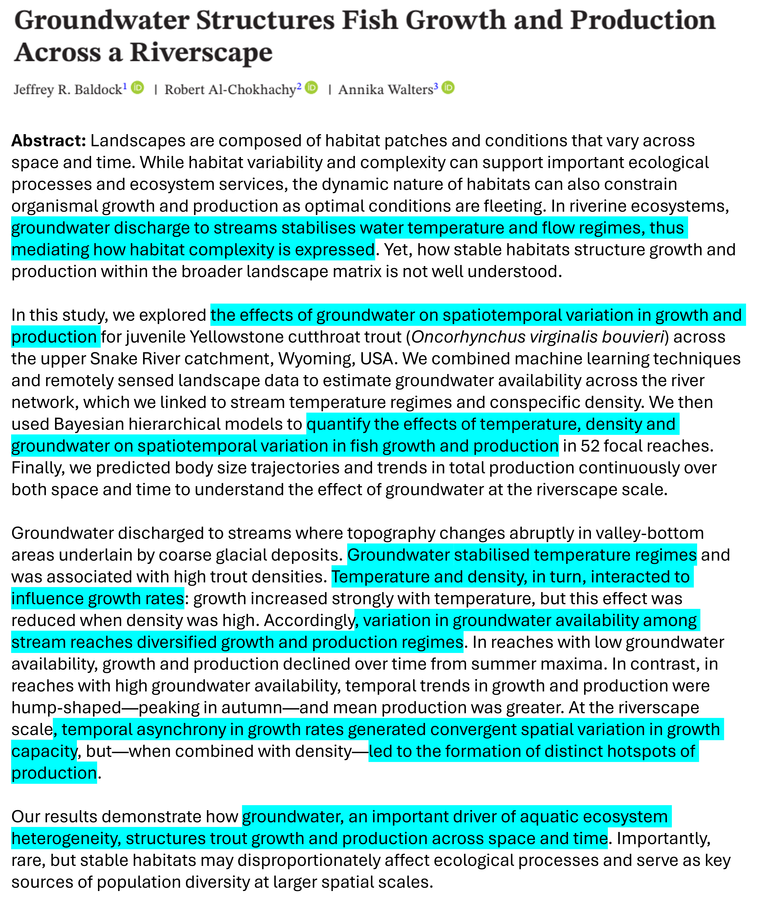

Introduction to Models
Data-Generating Processes
You have now entered your data into a spreadsheet (or some other organized data table). Now, it is time to suspend this “data = spreadsheet” thinking.
Perhaps the most interesting aspect of data is that they are outcomes of often complex processes; they are not simply abstract numbers. As a thought exercise, consider here a set of mass values for a jackalope. Observed jackalope mass varies because individuals differ in body size and condition. Depending on recent food capture or hydration state, mass may fluctuate within individuals over very short time scales. Additional variation also arises during measurement due to instrument precision, calibration drift, and movement or posture on the scale. In sum, there are a myriad processes leading to a simple measurement.
Every variable in any dataset say something fundamental about a system’s:
- mechanisms
- constraints (bounds, discreteness)
- randomness
Once you start thinking this way about data, it becomes very clear that not all variation in a given dataset carries the same meaning. Some variation reflects real structure in the system that we care about. Other variation comes from randomness, measurement limits, or processes that we did not explicitly track. Our task, then, is to separate the patterns that carry information from the variation that does not. This leads directly to the ideas of signal and noise and to why we use models in the first place:
Models are hypotheses about how the data were generated.
2. Signal vs Noise (Why Models Exist)
Goal: Introduce error before statistics.
Key ideas
- Observed data = systematic structure (signal) + unexplained variation (noise)
- Noise is not a nuisance — it is part of the process
- Different processes generate different kinds of noise
This naturally motivates: - error distributions - residuals - why assumptions exist at all
Teaching pivot:
> Normality assumptions are about what the model fails to explain, not the phenomenon itself.
![spider web picture]
3. Data Distributions as Stories About Noise
Goal: Make distributions feel scientific, not technical.
Key ideas
- Gaussian → additive continuous noise
- Poisson → counting variability
- Binomial → trial-based uncertainty
- Gamma → positive, right-skewed accumulation
Core message:
> Choosing a distribution is choosing a story about how randomness arises.
This flows directly into GLMs.
4. Why Ecologists Are (Quietly) Doing Causality
Goal: Reframe “association” language.
Key ideas
- Ecologists motivate predictors biologically
- Models are directional by construction
- Management, prediction, and climate inference require causal belief
Introduce
- implicit causality
- counterfactual thinking (light touch)
- why sensitivity analysis exists
Key line:
> Correlation is what the math gives you; causality is what the science is trying to argue.
test

5. ANOVAs and t-tests as Special Cases
Goal: Demystify classical statistics and lower resistance.
Key ideas
- t-tests and ANOVAs are linear models
- They assume:
- Gaussian errors
- identity link
- Group means = predictors with factor coding
Crucial reframing:
> We don’t abandon ANOVAs — we outgrow them.
This primes GLMs as a generalization, not a replacement.
6. The Structure of the GLM
Goal: Show how everything connects.
Three components
- Random component — distribution → noise
- Systematic component — linear predictor → signal
- Link function — connects the two
Key clarifications
- The link acts on the mean, not the data
- The distribution constrains support and variance
- Linear regression is just a GLM with an identity link and Gaussian errors
One-liner:
> GLMs separate what varies, why it varies, and how randomness behaves.
7. From GLMs to GLMMs (Briefly)
Goal: Introduce hierarchy as structure, not complication.
Key ideas
- Random effects model shared history or dependence
- They don’t fix bad models
- They encode biological or sampling structure
Position GLMMs as:
> Models of conditional independence, not magic bullets.
8. Diagnostics as Questions, Not Rituals
Goal: Avoid checklist thinking.
Frame diagnostics as
- Is the noise behaving as assumed?
- Is there unmodeled structure?
- Are predictions reasonable?
Key checks
- residual patterns
- dispersion
- leverage / influence
- biological plausibility
Closing line:
> Diagnostics ask whether the imaginary world you built still resembles reality.
Suggested Lecture Arc (One Sentence Each)
- Data come from processes
- Processes generate signal and noise
- Distributions describe noise
- Ecology rarely stops at correlation
- Classical tests are just simple models
- GLMs unify everything
- GLMMs add structure
- Diagnostics test the story
Meta-Teaching Insight
If students understand: - data-generating processes - signal vs noise - unit-level reasoning
Then GLMs stop being “advanced statistics” and become:
a formal language for ecological thinking
That’s the throughline worth preserving as you integrate the old material.